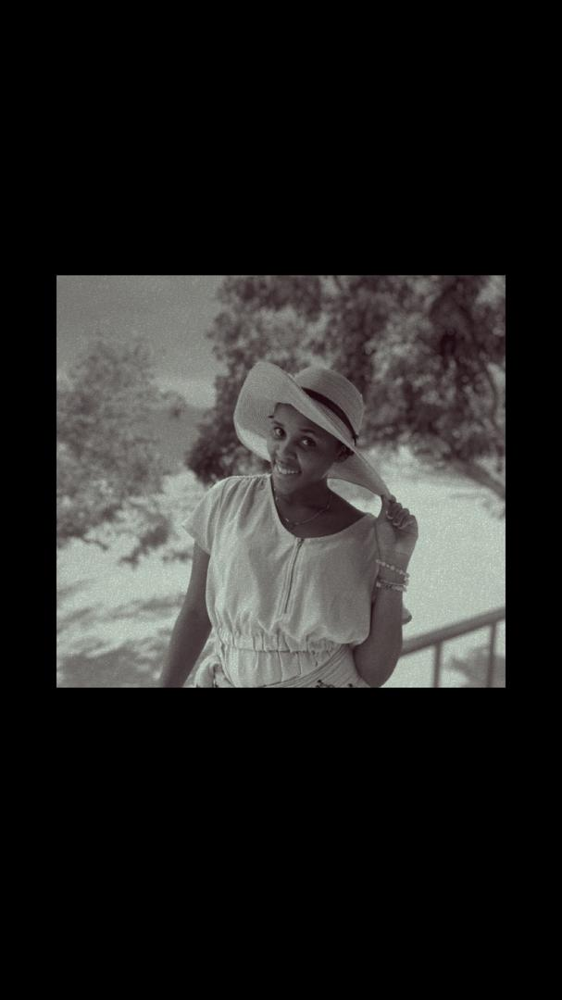

Dorcus Elisha
A curious computer science student on a journey to master programming and web design.
I believe technology is a powerful tool for change,
and I'm committed to develop skills to use it well.
My Skills
-
Cooking
I am well skiled in cooking varieties of foods, by using different styles to ensure my cooking is the best such as
-Baking
-Roasting
- Grilling
-
Programming
I'm in my learning journey of Computer Science, taking codes conceptsand turn them into practice daily.
-
Listening
I give full attention when someone is speaking. Listen to understand not just reply.
-
Decorating
I love making spaces look beautiful and welcoming. I enjoy choosing colors and arranging things.
Education
| Level | School | Year |
|---|---|---|
| University | University of Dar es Salaam | 2025-date |
| A-Level | St Marys Mazinde Juu Secondary School | 2023-2025 |
| O-Level | Harrison Uwata Girls' Secondary School | 2019-2022 |
| Primary | Umoja Primary SChool | 2012-2018 |
Hobbies & Interest
-
Singing
Singigng is one of my favourate thing to do in my free time.There is somethingabout music that speaks directly to the soul and for me singing is the most personal way to connect with it. Whether I'm humming along to a song I love or singing out loud when I'm alone. It always lift my spirit and helps me express feelings that I sometimes struggle to put into words. Music has a way of capturing how you feel,and singing makes me feel free, confident and deeply alive.
-
Watching movies
I genuinely enjoy sitting down and losing myself in a good movie.Films have a unique power to take you somewhere completely different a different world, a different time, a different lifeand I find that incredibly exciting. I love how agret story can make me laugh,cry, think deeply, or see the world from a perspective you never considered before. Watching movies is not just entertainment for me, is a way of learning about life,people, and emotions in a way that feels natural and enjoyable.
-
Drawing
Drawing is my personal creative escape. Whenever I pick up a pencil and start putting lines on pape, everything else fades away and it is justme and my imagination. I love how drawing allows me to express that are hard to say out loud, feelings, ideas and visionsthat live inside my head. It does not have to be perfect, it just has to be mine. Every sketch I make feels like a smallpiece of who I am, and that is what makes it so meangful of me.